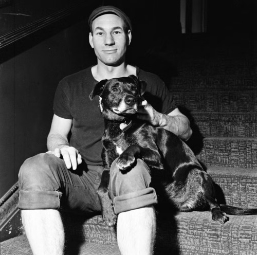
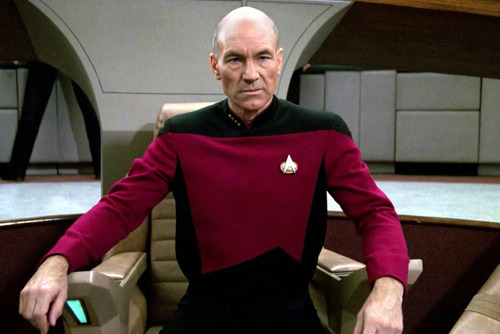
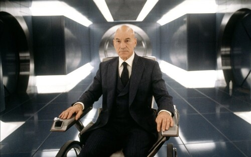

Patrick Stewart is stage and film actor well-known for multiple popular works of media including central roles in the “Star Trek” and “X-Men” franchises
as well as supporting roles across many films, shows, and video games. Stewart was born in Mirfield, England in 1940
and would begin studying acting and drama at the age of eleven. He would later make his professional stage debut in 1959 at the age of nineteen,
from this point forward Stewart would primarily work as a stage actor with a few minor TV and film appearances before landing the role of
“Capt. Jean-Luc Picard” in the science-fiction series “Star Trek: The Next Generation” in 1987. The series would later go on to become an
international success and make Stewart a household name which would lead him to take on many more film roles including the ironic role of
“Professor Charles Xavier” in the billion-dollar grossing “X-men” film series.
However, he would also continue stage acting as well with his most popular performances being roles in plays such as
“Who's Afraid of Virginia Woolf?”, “The Ride Down Mt. Morgan” and “Shakespeare” works with “Hamlet” being a notable example.
Some more of his renowned filmography include his portrayal of “Captain Ahab” in USA Network’s 1998 rendition of “Moby Dick”
and “Ebenezer Scrooge” in TNT’s 1999 rendition of “A Christmas Carol.” Throughout his acting career he has won a total of
twenty-eight awards including thirteen best performance related awards and over fifty nominations.
Stewart has been married a total of three times and has two children, a son Daniel Stewart and a daughter Sophie Alexandra Stewart.
His latest betrothal was to singer and songwriter Sunny Ozell in 2013.

Patrick Stewart (1970)

Patrick Stewart as "Jean-Luc Picard" on Star Trek: TNG

Patrick Stewart as "Professor Charles Xavier" on X-Men (2000)